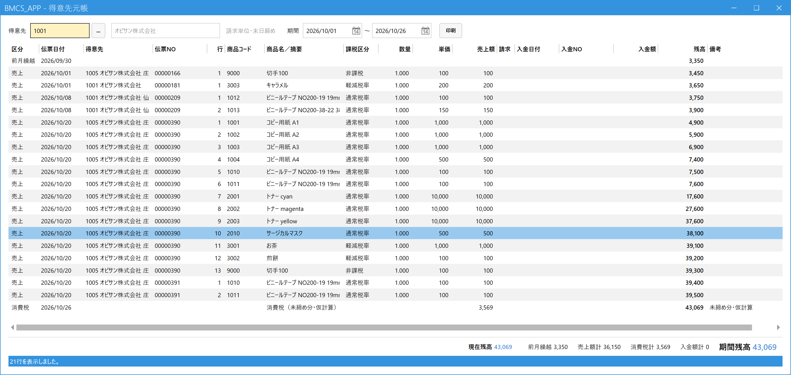

Check a Customer's Balance (Customer Ledger)
When to use this
Use this to check how much you can bill this customer right now (the amount receivable), and what you sold and when, and when payments came in.
Sales and payments are listed in date order, and you can see the balance after every line. This is a view-only screen, and it does not change any data.
Use this to check how much you can bill this customer right now (the amount receivable), and what you sold and when, and when payments came in.
Sales and payments are listed in date order, and you can see the balance after every line. This is a view-only screen, and it does not change any data.
1.Choose a customer and display the ledger
From the main menu, open Customer Ledger (得意先元帳) under Ledger (元帳). Enter the code in the Customer (得意先) field and press Enter (if you don't know the code, press Space to search). The customer's ledger is displayed.

- Customer (得意先): The customer you want to view. Next to the name, the trading terms are shown, such as "Billing unit / End-of-month closing (請求単位・末日締め)".
- Period (期間): The period to display (by default, from the 1st of this month to today). The display refreshes when you change it.
- Print (印刷): Opens a preview of the displayed ledger so you can print it or save it as a PDF.
- Detail lines (明細): Lines are listed in date order with the type (sale, receipt, consumption tax), slip date, slip No., product, amount and balance. The top line, "Carried Forward from Previous Month (前月繰越)", is the balance as of the day before the period starts.
- Totals at the bottom (下の合計欄): "Current Balance (現在残高)" is the balance as of today and does not change when you change the period. Also shown are the carried-forward amount, total sales, total consumption tax, total receipts, and the Period Balance (期間残高) (the balance on the last day of the period).
2.How to read the table
| Line type | Meaning |
|---|---|
| Carried Forward from Previous Month (前月繰越) | The balance as of the day before the period starts (tax included). |
| Sale (売上) | One line per sales line. The "Balance (残高)" at the right end is the running total up to that line. |
| Receipt (入金) | A line on the receipt date. The balance goes down. |
| Consumption Tax (消費税) | For closing-cycle customers, the consumption tax on sales before the billing closing is entered as one provisional calculation line, and the remarks show "Unclosed, provisional calculation (未締め分・仮計算)" (when you close the billing, it is replaced by the confirmed tax amount). |
As in the example above, the ledger of the billing consolidation customer (such as a head office) also lists the sales of the customers consolidated into it (such as branches); tell them apart with the "Customer (得意先)" column. Conversely, the ledger of a consolidated customer shows only the transaction history and no balance.
Press Enter on a line in the list, or double-click it, to open that slip in the Sales Entry (売上入力) or Receipt Entry (入金入力) screen.